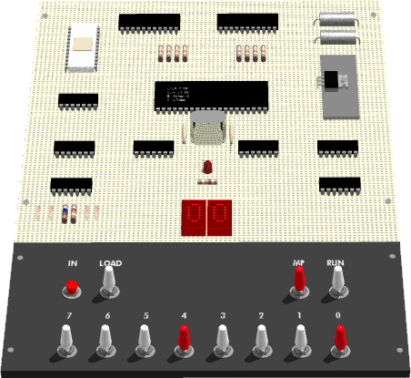
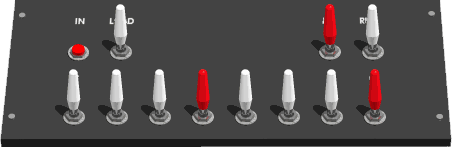

 
Cosmac Elf emulator in JavaScript
Your browser does not support the HTML5 canvas tag.
Controls:
a..f
Flip switches 7..4
j..;
Flip switches 3..0
SPACE
Press IN
g
Flip Load switch
h
Flip Memory Protect switch
ENTER
Flip Run switch
Links
cosmacelf.com
is a comprehensive site dedicated to the 1802 CPU
elf-emulation.com
, another comprehensive site about Elf emulation
"
Build The COSMAC ELF (part 1)
", Joseph Weisbecker's 1976 article in Popular Electronics that describes how to build the Cosmac Elf.
Tom Pittman's 1802 programming tutorial: "
A Short Course in Programming
"